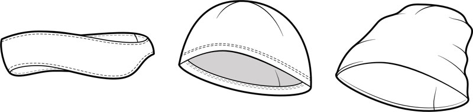

Lightweight Active Winter Headwear
The Alpha Beanies pattern delivers three essential styles of performance headwear, purpose-built for movement on the trail and cool-weather training. Whether you're chasing the sun on a brisk morning run, layering up for a fast hike, or needing minimal bulk under a climbing or biking helmet, these patterns offer comfort, simplicity, and active warmth.
Designed specifically for technical knit fabrics like Polartec Alpha Direct, Power Grid™, or high-performance fleece, the Alpha Beanies are your next must-make project for maximum comfort with minimal weight. They're quick to sew, perfectly packable, and made to keep you in the flow from summit mornings to evening cooldowns.
Three Styles for Your Next Adventure
This pattern includes three versatile variations—mix and match construction methods and fabrics to dial in the perfect warmth-to-weight ratio for your style of adventure:

- Headband: The ultimate minimalist ear warmer for brisk runs, cycling, or under-helmet layering. This pattern offers two construction methods: a sleek double-layer knit finish or a simple, single-layer fleece version for active moisture management.
- Fitted Beanie: A single-layer, form-fitting design that delivers maximum breathability and minimum bulk. It’s ideal for high-endurance activities where you need to dump heat quickly. Its low-volume profile fits excellently under helmets. Pro Tip: Use Alpha Direct for an incredible weight-to-warmth ratio.
- Slouch Beanie: A comfortable, double-layer design where all seams are neatly enclosed. This option emphasizes winter warmth and relaxed, everyday style. It can be worn cuffed or slouched back, and the extra volume works perfectly if you wear your hair up in a bun or ponytail.
Features
- Performance Focused: Designed for technical, breathable knit fabrics to manage moisture and provide active warmth without overheating.
- Three Essential Styles: Fitted Beanie, Slouch Beanie, and Headband variants included for versatile use across different weather and activities.
- Quick & Rewarding Make: Each version is an incredibly fast project, making them excellent for using up knit fabric scraps and achieving instant gratification.
- Layering Ready: Both the Fitted Beanie and Headband are designed to minimize bulk, making them ideal to wear comfortably under helmets or hoods.
- Clear Sizing: Consistent sizing across all three styles to ensure a reliable fit, regardless of the version you choose.


{kind=link}
{kind=link}
{kind=link}
{kind=link}